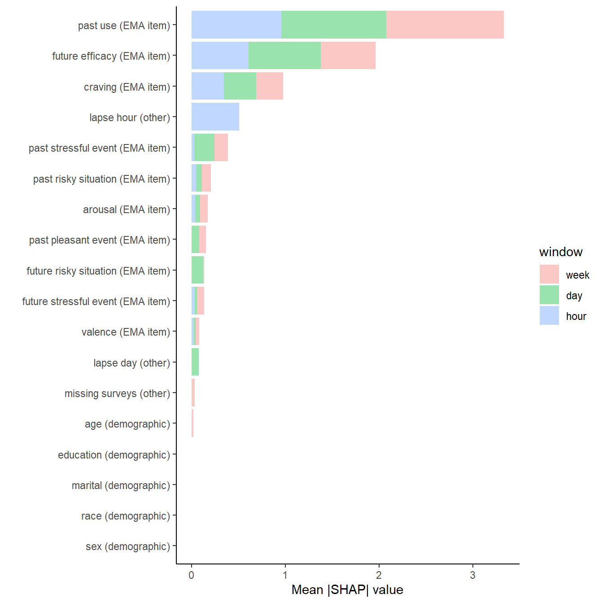

switch (Sys.info()[['sysname']],
# PC paths
Windows = {
path_models <- "P:/studydata/risk/models/ema"
path_data_shared <- "P:/studydata/risk/data_processed/shared"
path_data_ema <- "P:/studydata/risk/data_processed/ema"},
# IOS paths
Darwin = {
path_models <- "/Volumes/private/studydata/risk/models/ema"
path_data_shared <- "/Volumes/private/studydata/risk/data_processed/shared"
path_data_ema <- "/Volumes/private/studydata/risk/data_processed/ema"}
)Appendix A — Tables & Figures in Quarto
Appendix for demonstrating complex tables & figures
# Table data
disposition <- read_csv(file.path(path_data_ema, "disposition.csv"), col_types = "ccDDcccccccccc")
screen <- read_csv(file.path(path_data_shared, "screen.csv"), col_types = vroom::cols()) %>%
filter(subid %in% subset(disposition, analysis == "yes")$subid)
# Predictions data
preds_week<- readRDS(file.path(path_models, "resample_preds_best_all_1week_0_v4_kfold.rds"))
preds_day<- readRDS(file.path(path_models, "resample_preds_best_all_1day_0_v4_kfold.rds"))
preds_hour<- readRDS(file.path(path_models, "resample_preds_best_all_1hour_0_v4_kfold.rds"))
# posterior probabilites
pp <- readRDS(file.path(path_models, "posteriors_all_allwindows_0_v4_kfold.rds"))
# ROC curves
roc_week <- preds_week %>%
roc_curve(prob, truth = truth) %>%
mutate(model = "1week")
roc_day <- preds_day %>%
roc_curve(prob, truth = truth) %>%
mutate(model = "1day")
roc_hour <- preds_hour%>%
roc_curve(prob, truth = truth) %>%
mutate(model = "1hour")
roc_all <- roc_week %>%
bind_rows(roc_day) %>%
bind_rows(roc_hour)
# PR curves
pr_week <- preds_week %>%
pr_curve(prob, truth = truth) %>%
mutate(model = "1week")
pr_day <- preds_day %>%
pr_curve(prob, truth = truth) %>%
mutate(model = "1day")
pr_hour <- preds_hour%>%
pr_curve(prob, truth = truth) %>%
mutate(model = "1hour")
pr_all <- pr_week %>%
bind_rows(pr_day) %>%
bind_rows(pr_hour)
# Grouped SHAPS
shap_grouped_week <- readRDS(file.path(path_models, "imp_shap_grouped_all_1week_0_v4.rds")) %>%
group_by(group) %>%
summarize(mean_value = mean(abs(shap)), .groups = "drop") %>%
arrange(mean_value)
shap_grouped_day <- readRDS(file.path(path_models, "imp_shap_grouped_all_1day_0_v4.rds")) %>%
group_by(group) %>%
summarize(mean_value = mean(abs(shap)), .groups = "drop") %>%
arrange(mean_value)
shap_grouped_hour <- readRDS(file.path(path_models, "imp_shap_grouped_all_1hour_0_v4.rds")) %>%
group_by(group) %>%
summarize(mean_value = mean(abs(shap)), .groups = "drop") %>%
arrange(mean_value)footnote_table_dem <- "N = 151"| N | % | M | SD | Range | |
|---|---|---|---|---|---|
| Age | 41 | 11.9 | 21-72 | ||
| Sex | |||||
| Female | 74 | 49.0 | |||
| Male | 77 | 51.0 | |||
| Race | |||||
| American Indian/Alaska Native | 3 | 2.0 | |||
| Asian | 2 | 1.3 | |||
| Black/African American | 8 | 5.3 | |||
| White/Caucasian | 131 | 86.8 | |||
| Other/Multiracial | 7 | 4.6 | |||
| Hispanic, Latino, or Spanish Origin | |||||
| Yes | 4 | 2.6 | |||
| No | 147 | 97.4 | |||
| Education | |||||
| Less than high school or GED degree | 1 | 0.7 | |||
| High school or GED | 14 | 9.3 | |||
| Some college | 41 | 27.2 | |||
| 2-Year degree | 14 | 9.3 | |||
| College degree | 58 | 38.4 | |||
| Advanced degree | 23 | 15.2 | |||
| Employment | |||||
| Employed full-time | 72 | 47.7 | |||
| Employed part-time | 26 | 17.2 | |||
| Full-time student | 7 | 4.6 | |||
| Homemaker | 1 | 0.7 | |||
| Disabled | 7 | 4.6 | |||
| Retired | 8 | 5.3 | |||
| Unemployed | 18 | 11.9 | |||
| Temporarily laid off, sick leave, or maternity leave | 3 | 2.0 | |||
| Other, not otherwise specified | 9 | 6.0 | |||
| Personal Income | $34,298 | $31,807 | $0-200,000 | ||
| Marital Status | |||||
| Never married | 67 | 44.4 | |||
| Married | 32 | 21.2 | |||
| Divorced | 45 | 29.8 | |||
| Separated | 5 | 3.3 | |||
| Widowed | 2 | 1.3 | |||
| Note: | |||||
| N = 151 | |||||
footnote_table_auh_a <- "N = 151"
footnote_table_auh_b <- "Two participants reported 100 or more quit attempts. We removed these outliers prior to calculating the mean (M), standard deviation (SD), and range."auh <- screen %>%
summarise(mean = mean(auh_1, na.rm = TRUE),
SD = sd(auh_1, na.rm = TRUE),
min = min(auh_1, na.rm = TRUE),
max = max(auh_1, na.rm = TRUE)) %>%
mutate(var = "Age of first drink",
n = as.numeric(""),
perc = as.numeric("")) %>%
select(var, n, perc, everything()) %>%
full_join(screen %>%
summarise(mean = mean(auh_2, na.rm = TRUE),
SD = sd(auh_2, na.rm = TRUE),
min = min(auh_2, na.rm = TRUE),
max = max(auh_2, na.rm = TRUE)) %>%
mutate(var = "Age of regular drinking",
n = as.numeric(""),
perc = as.numeric("")) %>%
select(var, n, perc, everything()), by = c("var", "n", "perc", "mean", "SD",
"min", "max")) %>%
full_join(screen %>%
summarise(mean = mean(auh_3, na.rm = TRUE),
SD = sd(auh_3, na.rm = TRUE),
min = min(auh_3, na.rm = TRUE),
max = max(auh_3, na.rm = TRUE)) %>%
mutate(var = "Age at which drinking became problematic",
n = as.numeric(""),
perc = as.numeric("")) %>%
select(var, n, perc, everything()), by = c("var", "n", "perc", "mean", "SD",
"min", "max")) %>%
full_join(screen %>%
summarise(mean = mean(auh_4, na.rm = TRUE),
SD = sd(auh_4, na.rm = TRUE),
min = min(auh_4, na.rm = TRUE),
max = max(auh_4, na.rm = TRUE)) %>%
mutate(var = "Age of first quit attempt",
n = as.numeric(""),
perc = as.numeric("")) %>%
select(var, n, perc, everything()), by = c("var", "n", "perc", "mean", "SD",
"min", "max")) %>%
full_join(screen %>%
# filter out 2 people with 100 and 365 reported quit attempts - will make footnote in table
filter(auh_5 < 100) %>%
summarise(mean = mean(auh_5, na.rm = TRUE),
SD = sd(auh_5, na.rm = TRUE),
min = min(auh_5, na.rm = TRUE),
max = max(auh_5, na.rm = TRUE)) %>%
mutate(var = "Number of Quit Attempts*",
n = as.numeric(""),
perc = as.numeric("")) %>%
select(var, n, perc, everything()), by = c("var", "n", "perc", "mean", "SD",
"min", "max")) %>%
full_join(screen %>%
select(var = auh_6_1) %>%
mutate(var = case_when(var == "Long-Term Residential Treatment (more than 6 months)" ~ "Long-term residential (6+ months)",
TRUE ~ var)) %>%
group_by(var) %>%
drop_na() %>%
summarise(n = n()) %>%
mutate(perc = (n / 154) * 100), by = c("var", "n", "perc")) %>%
full_join(screen %>%
select(var = auh_6_2) %>%
mutate(var = case_when(var == "Short-Term Residential Treatment (less than 6 months)" ~ "Short-term residential (< 6 months)",
TRUE ~ var)) %>%
group_by(var) %>%
drop_na() %>%
summarise(n = n()) %>%
mutate(perc = (n / 154) * 100), by = c("var", "n", "perc")) %>%
full_join(screen %>%
select(var = auh_6_3) %>%
mutate(var = case_when(var == "Outpatient Treatment" ~ "Outpatient",
TRUE ~ var)) %>%
group_by(var) %>%
drop_na() %>%
summarise(n = n()) %>%
mutate(perc = (n / 154) * 100), by = c("var", "n", "perc")) %>%
full_join(screen %>%
select(var = auh_6_4) %>%
mutate(var = case_when(var == "Individual Counseling" ~ "Individual counseling",
TRUE ~ var)) %>%
group_by(var) %>%
drop_na() %>%
summarise(n = n()) %>%
mutate(perc = (n / 154) * 100), by = c("var", "n", "perc")) %>%
full_join(screen %>%
select(var = auh_6_5) %>%
mutate(var = case_when(var == "Group Counseling" ~ "Group counseling",
TRUE ~ var)) %>%
group_by(var) %>%
drop_na() %>%
summarise(n = n()) %>%
mutate(perc = (n / 154) * 100), by = c("var", "n", "perc")) %>%
full_join(screen %>%
select(var = auh_6_6) %>%
group_by(var) %>%
drop_na() %>%
summarise(n = n()) %>%
mutate(perc = (n / 154) * 100), by = c("var", "n", "perc")) %>%
full_join(screen %>%
select(var = auh_6_7) %>%
group_by(var) %>%
drop_na() %>%
summarise(n = n()) %>%
mutate(perc = (n / 154) * 100), by = c("var", "n", "perc")) %>%
full_join(screen %>%
select(var = auh_7) %>%
mutate(var = fct_relevel(factor(var, c("Yes", "No")))) %>%
group_by(var) %>%
summarise(n = n()) %>%
mutate(perc = (n / sum(n)) * 100), by = c("var", "n", "perc")) %>%
full_join(screen %>%
mutate(across(dsm5_1:dsm5_11, ~ recode(., "No" = 0, "Yes" = 1))) %>%
rowwise() %>%
# calculate dsm5 score by adding up dsm5_1 through dsm5_11
mutate(dsm5_total = sum(c(dsm5_1, dsm5_2, dsm5_3, dsm5_4, dsm5_5, dsm5_6, dsm5_7,
dsm5_8, dsm5_9, dsm5_10, dsm5_11))) %>%
ungroup() %>%
summarise(mean = mean(dsm5_total),
SD = sd(dsm5_total),
min = min(dsm5_total, na.rm = TRUE),
max = max(dsm5_total, na.rm = TRUE)) %>%
mutate(var = "Alcohol Use Disorder DSM-5 Symptom Count",
n = as.numeric(""),
perc = as.numeric("")) %>%
select(var, n, perc, everything()), by = c("var", "n", "perc", "mean", "SD",
"min", "max")) %>%
full_join(screen %>%
select(var = assist_2_1) %>%
filter(var != "Never" & !is.na(var)) %>%
mutate(var = "Tobacco products (cigarettes, chewing tobacco, cigars, etc.)") %>%
group_by(var) %>%
drop_na() %>%
summarise(n = n()) %>%
mutate(perc = (n / 154) * 100), by = c("var", "n", "perc")) %>%
full_join(screen %>%
select(var = assist_2_2) %>%
filter(var != "Never" & !is.na(var)) %>%
mutate(var = "Cannabis (marijuana, pot, grass, hash, etc.)") %>%
group_by(var) %>%
drop_na() %>%
summarise(n = n()) %>%
mutate(perc = (n / 154) * 100), by = c("var", "n", "perc")) %>%
full_join(screen %>%
select(var = assist_2_3) %>%
filter(var != "Never" & !is.na(var)) %>%
mutate(var = "Cocaine (coke, crack, etc.)") %>%
group_by(var) %>%
drop_na() %>%
summarise(n = n()) %>%
mutate(perc = (n / 154) * 100), by = c("var", "n", "perc")) %>%
full_join(screen %>%
select(var = assist_2_4) %>%
filter(var != "Never" & !is.na(var)) %>%
mutate(var = "Amphetamine type stimulants (speed, diet pills, ecstasy, etc.)") %>%
group_by(var) %>%
drop_na() %>%
summarise(n = n()) %>%
mutate(perc = (n / 154) * 100), by = c("var", "n", "perc")) %>%
full_join(screen %>%
select(var = assist_2_5) %>%
filter(var != "Never" & !is.na(var)) %>%
mutate(var = "Inhalants (nitrous, glue, petrol, paint thinner, etc.)") %>%
group_by(var) %>%
drop_na() %>%
summarise(n = n()) %>%
mutate(perc = (n / 154) * 100), by = c("var", "n", "perc")) %>%
full_join(screen %>%
select(var = assist_2_6) %>%
filter(var != "Never" & !is.na(var)) %>%
mutate(var = "Sedatives or sleeping pills (Valium, Serepax, Rohypnol, etc.)") %>%
group_by(var) %>%
drop_na() %>%
summarise(n = n()) %>%
mutate(perc = (n / 154) * 100), by = c("var", "n", "perc")) %>%
full_join(screen %>%
select(var = assist_2_7) %>%
filter(var != "Never" & !is.na(var)) %>%
mutate(var = "Hallucinogens (LSD, acid, mushrooms, PCP, Special K, etc.)") %>%
group_by(var) %>%
drop_na() %>%
summarise(n = n()) %>%
mutate(perc = (n / 154) * 100), by = c("var", "n", "perc")) %>%
full_join(screen %>%
select(var = assist_2_8) %>%
filter(var != "Never" & !is.na(var)) %>%
mutate(var = "Opioids (heroin, morphine, methadone, codeine, etc.)") %>%
group_by(var) %>%
drop_na() %>%
summarise(n = n()) %>%
mutate(perc = (n / 154) * 100), by = c("var", "n", "perc"))
# display and format table
auh %>%
mutate(range = str_c(min, "-", max)) %>%
select(-c(min, max)) %>%
kbl(longtable = TRUE,
booktabs = TRUE,
col.names = c("", "N", "%", "M", "SD", "Range"),
align = c("l", "c", "c", "c", "c", "c"),
digits = 1,
caption = "Alcohol Related Information") %>%
kable_styling(bootstrap_options = "none",
font_size = 12,
full_width = TRUE) %>%
row_spec(row = 0, align = "c", italic = TRUE) %>%
pack_rows("Alcohol Use Disorder Milestones", 1, 4, bold = FALSE, label_row_css = "border-bottom: none;") %>%
pack_rows("Lifetime History of Treatment (Can choose more than 1)", 6, 12, bold = FALSE, label_row_css = "border-bottom: none;") %>%
pack_rows("Received Medication for Alcohol Use Disorder", 13, 14, bold = FALSE, label_row_css = "border-bottom: none;") %>%
pack_rows("Current (Past 3 Month) Drug Use", 16, 23, bold = FALSE, label_row_css = "border-bottom: none;") %>%
footnote(general=footnote_table_auh_a, symbol = c(footnote_table_auh_b),
threeparttable = TRUE) %>%
row_spec(0, extra_css = "border-bottom: 1px solid; border-top: 1px solid") %>% #add borders on the header row
row_spec(nrow(auh), extra_css = "border-bottom: 1px solid") #add a border after the last row, before the footnote| N | % | M | SD | Range | |
|---|---|---|---|---|---|
| Alcohol Use Disorder Milestones | |||||
| Age of first drink | 14.6 | 2.9 | 6-24 | ||
| Age of regular drinking | 19.5 | 6.6 | 11-56 | ||
| Age at which drinking became problematic | 27.8 | 9.6 | 15-60 | ||
| Age of first quit attempt | 31.5 | 10.4 | 15-65 | ||
| Number of Quit Attempts* | 5.5 | 5.8 | 0-30 | ||
| Lifetime History of Treatment (Can choose more than 1) | |||||
| Long-term residential (6+ months) | 8 | 5.2 | |||
| Short-term residential (< 6 months) | 49 | 31.8 | |||
| Outpatient | 74 | 48.1 | |||
| Individual counseling | 97 | 63.0 | |||
| Group counseling | 62 | 40.3 | |||
| Alcoholics Anonymous/Narcotics Anonymous | 93 | 60.4 | |||
| Other | 40 | 26.0 | |||
| Received Medication for Alcohol Use Disorder | |||||
| Yes | 59 | 39.1 | |||
| No | 92 | 60.9 | |||
| Alcohol Use Disorder DSM-5 Symptom Count | 8.9 | 1.9 | 4-11 | ||
| Current (Past 3 Month) Drug Use | |||||
| Tobacco products (cigarettes, chewing tobacco, cigars, etc.) | 84 | 54.5 | |||
| Cannabis (marijuana, pot, grass, hash, etc.) | 66 | 42.9 | |||
| Cocaine (coke, crack, etc.) | 18 | 11.7 | |||
| Amphetamine type stimulants (speed, diet pills, ecstasy, etc.) | 15 | 9.7 | |||
| Inhalants (nitrous, glue, petrol, paint thinner, etc.) | 3 | 1.9 | |||
| Sedatives or sleeping pills (Valium, Serepax, Rohypnol, etc.) | 22 | 14.3 | |||
| Hallucinogens (LSD, acid, mushrooms, PCP, Special K, etc.) | 14 | 9.1 | |||
| Opioids (heroin, morphine, methadone, codeine, etc.) | 16 | 10.4 | |||
| Note: | |||||
| N = 151 | |||||
| * Two participants reported 100 or more quit attempts. We removed these outliers prior to calculating the mean (M), standard deviation (SD), and range. | |||||
footnote_table_perf_metrics <- "Insert footnote"metrics_week <- preds_week %>%
conf_mat(truth, estimate) %>%
summary() %>%
mutate(.estimate = round(.estimate, 3)) %>%
rename(week = .estimate,
metric = .metric) %>%
select(-.estimator)
metrics_day <- preds_day %>%
conf_mat(truth, estimate) %>%
summary() %>%
mutate(.estimate = round(.estimate, 3)) %>%
rename(day = .estimate,
metric = .metric) %>%
select(-.estimator)
metrics_hour <- preds_hour %>%
conf_mat(truth, estimate) %>%
summary() %>%
mutate(.estimate = round(.estimate, 3)) %>%
rename(hour = .estimate,
metric = .metric) %>%
select(-.estimator)
metrics <- metrics_week %>%
full_join(metrics_day, by = "metric") %>%
full_join(metrics_hour, by = "metric") %>%
filter(metric %in% c("accuracy", "sens", "spec", "ppv", "npv"))
auc <- tibble(metric = "auc",
week = preds_week %>% roc_auc(prob, truth = truth) %>%
pull(.estimate) %>% round(3),
day = preds_day %>% roc_auc(prob, truth = truth) %>%
pull(.estimate) %>% round(3),
hour = preds_hour %>% roc_auc(prob, truth = truth) %>%
pull(.estimate) %>% round(3))
metrics <- metrics %>%
bind_rows(auc)
metrics <- metrics[c(6,1,2,3,4,5),]
metrics %>%
kbl(col.names = c("Metric", "Week", "Day", "Hour"),
booktabs = TRUE,
digits = 3,
align = c("l", "c", "c", "c"),
caption = "Performance Metrics by Model") %>%
row_spec(row = 0, align = "c") %>%
kable_styling(position = "left",
bootstrap_options = "none") %>%
footnote(general=footnote_table_perf_metrics) %>%
column_spec(1:4, width = "1in") %>% #specify column width
row_spec(0, extra_css = "border-bottom: 1px solid; border-top: 1px solid") %>% #add borders on the header row
row_spec(nrow(metrics), extra_css = "border-bottom: 1px solid") #add a border after the last row, before the footnote| Metric | Week | Day | Hour |
|---|---|---|---|
| auc | 0.900 | 0.914 | 0.933 |
| accuracy | 0.838 | 0.849 | 0.862 |
| sens | 0.792 | 0.817 | 0.841 |
| spec | 0.853 | 0.852 | 0.862 |
| ppv | 0.646 | 0.315 | 0.023 |
| npv | 0.924 | 0.982 | 0.999 |
| Note: | |||
| Insert footnote |
fig_caption_roc_pp <- "Insert note here"roc_plot <- roc_all %>%
mutate(model = factor(model, levels = c("1week", "1day", "1hour"),
labels = c("week", "day", "hour"))) %>%
ggplot(aes(x = 1 - specificity, y = sensitivity, color = model)) +
geom_path() +
geom_abline(lty = 3) +
coord_fixed(xlim = c(0, 1), ylim = c(0, 1)) +
labs(x = "Specificity",
y = "Sensitivity") +
scale_x_continuous(breaks = seq(0,1,.25),
labels = sprintf("%.2f", seq(1,0,-.25))) +
theme(legend.position = "none")
pp_tidy <- pp %>%
tidy(seed = 123)
ci <- pp_tidy %>%
summary() %>%
mutate(model = factor(model, levels = c("week", "day", "hour")),
y = 1000)
pp_plot <- pp_tidy %>%
mutate(model = factor(model, levels = c("week", "day", "hour"))) %>%
ggplot() +
geom_histogram(aes(x = posterior, fill = model), color = "black", alpha = .4,
bins = 30) +
geom_segment(mapping = aes(y = y+100, yend = y-100, x = mean, xend = mean,
color = model),
show.legend = FALSE,
data = ci) +
geom_segment(mapping = aes(y = y, yend = y, x = lower, xend = upper, color = model),
show.legend = FALSE,
data = ci) +
geom_text(data = ci, x = c(.93, .907, .92), y = 1000,
label = str_c(round(ci$mean, 2), " [", round(ci$lower, 2), ", ", round(ci$upper, 2), "]")) +
facet_wrap(~model, ncol = 1) +
scale_y_continuous("Posterior Probability", breaks = c(0, 500, 1000)) +
xlab("Area Under ROC Curve") +
theme(strip.background = element_blank(),
strip.text.x = element_blank(),
legend.position = "bottom")
plot_grid(roc_plot, pp_plot, ncol = 2, rel_widths = c(1, 1.25))
fig_caption_roc <- "Receiver Operating Characteritic Curves by Model "roc_all %>%
mutate(model = factor(model, levels = c("1week", "1day", "1hour"),
labels = c("week", "day", "hour"))) %>%
ggplot(aes(x = 1 - specificity, y = sensitivity, color = model)) +
geom_path() +
geom_abline(lty = 3) +
coord_fixed(xlim = c(0, 1), ylim = c(0, 1)) +
labs(x = "Specificity",
y = "Sensitivity") +
scale_x_continuous(breaks = seq(0,1,.25),
labels = sprintf("%.2f", seq(1,0,-.25)))
fig_caption_pp <- "Posterior Probability Distributions for Area Under the ROC Curve by Model. Horizontal lines represent 95 percent credible intervals for each model. Verical line represents mean of the posteerior distribution."pp_tidy <- pp %>%
tidy(seed = 123)
ci <- pp_tidy %>%
summary() %>%
mutate(model = factor(model, levels = c("week", "day", "hour")),
y = 1000)
pp_tidy %>%
mutate(model = factor(model, levels = c("week", "day", "hour"))) %>%
ggplot() +
geom_histogram(aes(x = posterior, fill = model), color = "black", alpha = .4,
bins = 30) +
geom_segment(mapping = aes(y = y+100, yend = y-100, x = mean, xend = mean,
color = model),
show.legend = FALSE,
data = ci) +
geom_segment(mapping = aes(y = y, yend = y, x = lower, xend = upper, color = model),
show.legend = FALSE,
data = ci) +
geom_text(data = ci, x = c(.925, .912, .915), y = 1000,
label = str_c(round(ci$mean, 2), " [", round(ci$lower, 2), ", ", round(ci$upper, 2), "]")) +
facet_wrap(~model, ncol = 1) +
scale_y_continuous("Posterior Probability", breaks = c(0, 500, 1000)) +
xlab("Area Under ROC Curve") 
pr_.75_cutoff <- pr_all %>%
mutate(recall = round(recall, 3),
precision = round(precision, 3),
.threshold = round(.threshold, 3),
model = factor(model,
levels = c("1week", "1day", "1hour"),
labels = c("week", "day", "hour"))) %>%
filter(precision == .75) %>%
group_by(model, precision) %>%
summarise(recall = mean(recall),
threshold = mean(.threshold),
.groups = "drop")fig_caption_pr <- "Precision-Recall Curves for models."pr_all %>%
mutate(model = factor(model, levels = c("1week", "1day", "1hour"),
labels = c("week", "day", "hour"))) %>%
ggplot(aes(x = recall, y = precision, color = model)) +
geom_path() +
geom_segment(mapping = aes(y = .75, yend = .75, x = -.5, xend = recall,
color = model),
linetype = "dashed",
alpha = .8,
show.legend = FALSE,
data = pr_.75_cutoff) +
geom_segment(mapping = aes(y = -.5, yend = .75, x = recall, xend = recall,
color = model),
linetype = "dashed",
alpha = .8,
show.legend = FALSE,
data = pr_.75_cutoff) +
coord_fixed(xlim = c(0, 1), ylim = c(0, 1)) +
labs(x = "Sensitivity (Recall)",
y = "Positive Predictive Value (Precision)")
fig_caption_shapgrouped <- "Variable Importance (SHAP Values) for each Model. Raw EMA features are grouped by the original item from the EMA. Features from demographics and the day and hour for the start of the prediction window are also included."shap_grouped_all <- shap_grouped_week %>%
mutate(window = "week") %>%
bind_rows(shap_grouped_day %>%
mutate(window = "day")) %>%
bind_rows(shap_grouped_hour %>%
mutate(window = "hour")) %>%
mutate(window = factor(window, levels = c("week", "day", "hour"))) %>%
mutate(group = factor(group, levels = c("past use (EMA item)",
"craving (EMA item)",
"past risky situation (EMA item)",
"past stressful event (EMA item)",
"past pleasant event (EMA item)",
"valence (EMA item)",
"arousal (EMA item)",
"future risky situation (EMA item)",
"future stressful event (EMA item)",
"future efficacy (EMA item)",
"lapse day (other)",
"lapse hour (other)",
"missing surveys (other)",
"age (demographic)",
"sex (demographic)",
"race (demographic)",
"marital (demographic)",
"education (demographic)")))
shap_grouped_all %>%
mutate(group = reorder(group, mean_value, sum)) %>%
ggplot() +
geom_bar(aes(x = group, y = mean_value, fill = window), stat = "identity", alpha = .4) +
ylab("Mean |SHAP| value") +
xlab("") +
coord_flip()